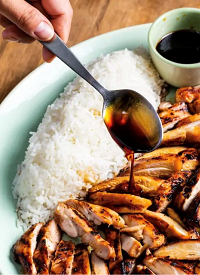

Chicken Teriyaki

Grilled chicken with teriyaki sauce
Ingredients
- 1 cup soy sauce
- 1/2 cup sugar
- 2 tablespoons mirin
- 1 2-inch piece ginger
- 5 cloves garlic
- 3 pounds chicken thighs
Steps
- Bring soy sauce, sugar, and mirin to boil in small saucepan over medium-high heat, stirring to dissolve sugar. Remove from heat and let teriyaki sauce cool completely.
- Combine ¾ cup teriyaki sauce, ginger, and garlic in blender and process until smooth, about 20 seconds. Set aside remaining teriyaki sauce for serving (you should have about ½ cup).
- Place chicken in 1-gallon zipper-lock bag and add teriyaki sauce–ginger mixture. Press out air, seal bag, and turn to coat chicken with marinade. Refrigerate for at least 1 hour or up to 24 hours.
- FOR A CHARCOAL GRILL: Open bottom vent completely. Light large chimney starter filled with charcoal briquettes (6 quarts). When top coals are partially covered with ash, pour evenly over grill. Set cooking grate in place, cover, and open lid vent completely. Heat grill until hot, about 5 minutes.
- Clean and oil cooking grate. Place chicken on grill and cook (covered if using gas) until chicken is lightly charred and registers at least 175 degrees, 6 to 8 minutes per side, rearranging as needed to ensure even browning. Transfer to cutting board, tent with aluminum foil, and let rest for 5 minutes. Slice crosswise ½ inch thick and serve with reserved teriyaki sauce.